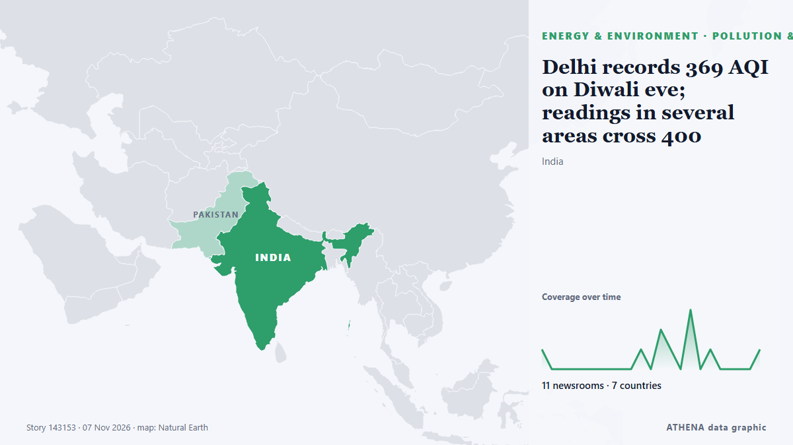

Pollution et biodiversité
SponsoriséPrésenté par  Cybernetics and Artificial Intelligence Lab Welcome to the Cybernetics and Artificial Intelligence Laboratory, established at the Department of Business Administration of the National and Kapodistrian University of Athens. The lab is headed by Professor Dimitrios Thomakos. The lab aims to do research that can be published in top venues. Our research uses tools and methods of Artificial Intelligence, and lies in the following areas: - Forecasting - Decision making - Cyber security - Finance We are always looking forward to collaborating with exceptional students!
Cybernetics and Artificial Intelligence Lab Welcome to the Cybernetics and Artificial Intelligence Laboratory, established at the Department of Business Administration of the National and Kapodistrian University of Athens. The lab is headed by Professor Dimitrios Thomakos. The lab aims to do research that can be published in top venues. Our research uses tools and methods of Artificial Intelligence, and lies in the following areas: - Forecasting - Decision making - Cyber security - Finance We are always looking forward to collaborating with exceptional students!
| 25 oct. | 0 |
|---|---|
| 26 oct. | 0 |
| 27 oct. | 0 |
| 28 oct. | 0 |
| 29 oct. | 0 |
| 30 oct. | 0 |
| 31 oct. | 1 |
| 1 nov. | 0 |
| 2 nov. | 2 |
| 3 nov. | 2 |
| 4 nov. | 5 |
| 5 nov. | 5 |
| 6 nov. | 3 |
| 7 nov. | 1 |
Les titres sont affichés en anglais, tels que publiés.

Delhi records 369 AQI on Diwali eve; readings in several areas cross 400
New Delhi: Delhi's AQI at 369 was in the ‘very poor’ category on Saturday as smog enveloped the city on the eve of Diwali and reduced visibility. de Deccan Herald
Officials Search for Bear that Killed a Mother, Daughter in British Columbia
Family members have identified the two victims of a suspected fatal grizzly bear attack near Bella Coola, B.C., as Jennifer Balcarras, 48, and her daughter Selah Reed, 20. de CBC News (alternative feed)
Singapore to end N95 mask distribution on Saturday as haze abates
The Ministry of Health will deactivate both the Public Health Preparedness Clinic Scheme and the Haze Subsidy Scheme from Nov 12. de CNA (Channel NewsAsia)
Evros Delta Among World’s Top Wintering Sites for Bewick Swans
The Evros Delta has become a major global wintering site for Bewick’s swans, with numbers rising from 30 in 2005 to a record 11,000 in 2022. de Greek City Times
'We have nothing': Displaced mothers in Yemen's Taiz collect plastic to survive
TAIZ, Yemen, Nov 6 - Two single mothers who fled their village three weeks ago are struggling to keep their children fed and warm in the besieged Yemeni city of Taiz, where they live in a damaged… de The Straits Times
Delhi braces for ‘pollution season’ as smog shrouds India’s capital – in pictures
The air quality index in Delhi has already soared above 650, more than 30 times the limit the World Health Organization deems to be safe. de Guardian Environment
Galamsey threatening EU-Ghana partnership; EU pledges support to fight it- Deputy EU ambassador
By Love Wilhelmina Abanonave The Deputy European Union Ambassador to Ghana, Jonas Claes, says illegal mining, popularly known as galamsey, remains a pervasive and destructive challenge posing severe… de GBC Ghana Online
CHOGM 2026 opens with drive to unlock prosperity for Commonwealth’s 2.7 billion people
Commonwealth countries need to build greater democratic, economic and environmental resilience if they are to prosper amid escalating conflict, weak growth and climate pressures, according to a new… de Post-Courier (PNG)
SM City Baguio continues to Integrate daily sustainability measures into mall operations
BAGUIO CITY, Philippines — Behind the daily operations of SM City Baguio are employees whose routine work integrates environmental sustainability into… de Daily Tribune
Singapore to toughen haze law with arrest powers, bigger fines
SINGAPORE: Singapore’s parliament moved on Wednesday to toughen its anti-haze law with arrest powers, bigger fines and potential restrictions on companies linked to transboundary air pollution from… de New Straits Times
Greece Opens Restored 11th-Century Byzantine Church to Public
Greece reopens the restored 11th-century Byzantine church of Maximianoupolis near Komotini following a €1.5 million restoration project. de Greek City Times
Africa: COP17 - Nations Chart 'Yerevan Pathway' to Speed Up Action for Nature
[UN News] At the halfway mark to 2030, countries meeting in Armenia have agreed a roadmap to accelerate action for nature, after a global review found the world off track to meet its biodiversity… de AllAfrica
UNICEF reports five poliovirus detections in Niger
….Three human infections, two environmental samples identified in Bida, Chanchaga By Clare Nnabuike, Minna The United Nations Children’s Fund (UNICEF) has raised the alarm over the detection of five… de Vanguard
Troubles Bill debate ‘toxic’ and pitted veterans against victims – commissioner
Joe McVey also said people affected by the Troubles have been ‘betrayed’ and ‘forgotten’ by successive governments. de Evening Standard (London)